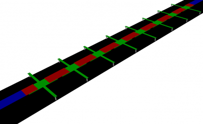
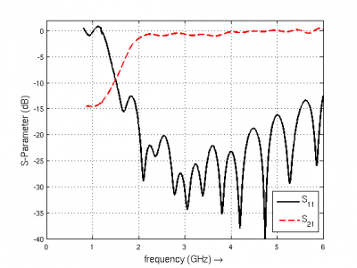

Tutorial: CRLH Leaky Wave Antenna
From openEMS
- Download the latest matlab files using gitweb: CRLH_LeakyWaveAnt.m & CreateCRLH.m
- Simulation Time: ~ 30 min
- Post-Processing: up to 7h for a full 3D radiation pattern (needs an optimization)

 Setup for the CRLH leaky wave antenna with 8 unit cells
Setup for the CRLH leaky wave antenna with 8 unit cells
We will cover in this tutorial:
- setup a feeding mircostrip line & port
- use an external script to setup several CRLH unit cell
- calculate the radiation pattern
Contents |
First Steps
- Install and verify your openEMS installation: Tutorial: First Steps
- You may have a look at the tutorial introducing a CRLH unit cell extraction: Tutorial: CRLH Parameter Extraction
Matlab Simulation Script
- Start the script within an empty environment:
close all clear clc
- Setup the simulation & geometrical parameter
physical_constants; unit = 1e-6; % specify everything in um feed_length = 20000; substrate_thickness = [1524 101 254]; substrate_epsr = [3.48 3.48 3.48]; N_Cells = 8; %number of CRLH unit cells CRLH.LL = 14e3; %CRLH totel (line) length CRLH.LW = 4e3; %CRLH unit cell width (without the stubs) CRLH.GLB = 1950; %CRLH gap width bottom layer CRLH.GLT = 4700; %CRLH gap width top layer CRLH.SL = 7800; %CRLH stub length (bottom layer, both sides) CRLH.SW = 1000; %CRLH stub width (bottom layer, both sides) CRLH.VR = 250; %CRLH via hole radius (stub -> ground) CRLH.TopSig = sum(substrate_thickness); %top layer height CRLH.BottomSig = CRLH.TopSig - substrate_thickness(end); %bottom layer height substrate_width = CRLH.LW + 2*CRLH.SL; Air_Spacer = 25000; % frequency range of interest f_start = 0.8e9; f_stop = 6e9; f_rad = (1.9:0.1:4.2)*1e9; Plot_3D_Rad_Pattern = 0; %this may take a very very long time! > 7h
- Setup the FDTD parameter including the excitation time signal and boundary conditions
FDTD = InitFDTD( 20000 ); FDTD = SetGaussExcite( FDTD, (f_start+f_stop)/2, (f_stop-f_start)/2 ); BC = {'PML_8' 'PML_8' 'PML_8' 'PML_8' 'PML_8' 'PML_8'}; FDTD = SetBoundaryCond( FDTD, BC );
- Setup the inhomogeneous FDTD mesh and the CRLH unit cells
CSX = InitCSX(); resolution = c0/(f_stop*sqrt(max(substrate_epsr)))/unit /30; % resolution of lambda/30 mesh.x = [-feed_length-(N_Cells*CRLH.LL)/2-Air_Spacer -feed_length-(N_Cells*CRLH.LL)/2 0 feed_length+(N_Cells*CRLH.LL)/2 feed_length+(N_Cells*CRLH.LL)/2+Air_Spacer]; mesh.y = [-Air_Spacer-substrate_width/2 0 Air_Spacer+substrate_width/2]; substratelines = cumsum(substrate_thickness); mesh.z = [-0.7*Air_Spacer 0 cumsum(substrate_thickness) linspace(substratelines(end-1),substratelines(end),4) Air_Spacer]; % create the CRLH unit cells (will define additional fixed mesh lines) pos_x = -(N_Cells*CRLH.LL)/2 + CRLH.LL/2; for n=1:N_Cells [CSX mesh] = CreateCRLH(CSX, mesh, CRLH, resolution/4, [pos_x 0 0]); pos_x = pos_x + CRLH.LL; end % Smooth the given mesh mesh.x = SmoothMeshLines(mesh.x, resolution, 1.5, 0); mesh.y = SmoothMeshLines(mesh.y, resolution, 1.5, 0); mesh.z = SmoothMeshLines(mesh.z, resolution, 1.5, 0); CSX = DefineRectGrid( CSX, unit, mesh );
- A closer look inside the CreateCRLH function:
This function will add all the necessary metal objects composing a CRLH unit cell. Additionally it will add appropriate mesh lines as needed for a smooth mesh including a thin metal handling.
function [CSX mesh] = CreateCRLH(CSX, mesh, CRLH, resolution, translate) if (nargin<5) translate = [0 0 0]; end CSX = AddMetal(CSX, 'metal_top'); one_two_third = [-resolution/3 2*resolution/3]; start = [-CRLH.LL/2 -CRLH.LW/2 CRLH.TopSig]+translate; stop = [-CRLH.GLT/2 CRLH.LW/2 CRLH.TopSig]+translate; CSX = AddBox(CSX, 'metal_top', 10, start, stop); mesh.x = [mesh.x start(1) stop(1)+one_two_third]; mesh.y = [mesh.y start(2)-one_two_third stop(2)+one_two_third]; start = [+CRLH.LL/2 -CRLH.LW/2 CRLH.TopSig]+translate; stop = [+CRLH.GLT/2 CRLH.LW/2 CRLH.TopSig]+translate; CSX = AddBox(CSX, 'metal_top', 10, start, stop); mesh.x = [mesh.x start(1) stop(1)-one_two_third]; CSX = AddMetal(CSX, 'metal_bot'); start = [-(CRLH.LL-CRLH.GLB)/2 -CRLH.LW/2 CRLH.BottomSig]+translate; stop = [+(CRLH.LL-CRLH.GLB)/2 CRLH.LW/2 CRLH.BottomSig]+translate; CSX = AddBox(CSX, 'metal_bot', 10, start, stop); mesh.x = [mesh.x start(1)-one_two_third stop(1)+one_two_third]; start = [-CRLH.SW/2 -CRLH.LW/2-CRLH.SL CRLH.BottomSig]+translate; stop = [+CRLH.SW/2 CRLH.LW/2+CRLH.SL CRLH.BottomSig]+translate; CSX = AddBox(CSX, 'metal_bot', 10, start, stop); mesh.x = [mesh.x start(1)-one_two_third stop(1)+one_two_third]; mesh.y = [mesh.y start(2) stop(2)]; CSX = AddMetal(CSX, 'via'); start = [0 -CRLH.LW/2-CRLH.SL+CRLH.SW/2 0]+translate; stop = [0 -CRLH.LW/2-CRLH.SL+CRLH.SW/2 CRLH.BottomSig]+translate; CSX = AddCylinder(CSX, 'via', 10, start, stop, CRLH.VR); mesh.x = [mesh.x start(1)+[-1 0 1]*CRLH.VR]; mesh.y = [mesh.y start(2)+[-1 0 1]*CRLH.VR]; start(2) = -start(2); stop(2) = -stop(2); CSX = AddCylinder(CSX, 'via', 10, start, stop, CRLH.VR); mesh.y = [mesh.y start(2)+[-1 0 1]*CRLH.VR]; end
- Add the subtrate layer:
substratelines = [0 substratelines]; for n=1:numel(substrate_thickness) CSX = AddMaterial( CSX, ['substrate' int2str(n)] ); CSX = SetMaterialProperty( CSX, ['substrate' int2str(n)], 'Epsilon', substrate_epsr(n) ); start = [-feed_length-(N_Cells*CRLH.LL)/2, -substrate_width/2, substratelines(n)]; stop = [+feed_length+(N_Cells*CRLH.LL)/2, substrate_width/2, substratelines(n+1)]; CSX = AddBox( CSX, ['substrate' int2str(n)], 0, start, stop ); end
- Add the two feeding MSL ports and a ground plane
CSX = AddMetal( CSX, 'PEC' ); start = [-feed_length-(N_Cells*CRLH.LL)/2, -substrate_width/2, 0]; stop = [+feed_length+(N_Cells*CRLH.LL)/2, substrate_width/2, 0]; %ground plane CSX = AddBox( CSX, 'PEC', 0, start, stop ); portstart = [ -feed_length-(N_Cells*CRLH.LL)/2 , -CRLH.LW/2, substratelines(end)]; portstop = [ -(N_Cells*CRLH.LL)/2, CRLH.LW/2, 0]; [CSX,portstruct{1}] = AddMSLPort( CSX, 999, 1, 'PEC', portstart, portstop, 0, [0 0 -1], 'ExcitePort', 'excite', 'MeasPlaneShift', feed_length/2, 'Feed_R', 50); portstart = [ feed_length+(N_Cells*CRLH.LL)/2 , -CRLH.LW/2, substratelines(end)]; portstop = [ +(N_Cells*CRLH.LL)/2, CRLH.LW/2, 0]; [CSX,portstruct{2}] = AddMSLPort( CSX, 999, 2, 'PEC', portstart, portstop, 0, [0 0 -1], 'MeasPlaneShift', feed_length/2, 'Feed_R', 50 );
- Setup the near- to far-field (nf2ff) dump box: The box has to be about 10 cells smaller as the simulation domain to not get in conflict with the pml boundary conditions!
start = [mesh.x(1) mesh.y(1) mesh.z(1) ] + 10*resolution; stop = [mesh.x(end) mesh.y(end) mesh.z(end)] - 10*resolution; [CSX nf2ff] = CreateNF2FFBox(CSX, 'nf2ff', start, stop);
- Create the simulation folder/ write the xml file/ View the file using AppCSXCAD and run openEMS
Sim_Path = 'tmp'; Sim_CSX = 'CRLH.xml'; [status, message, messageid] = rmdir( Sim_Path, 's' ); % clear previous directory [status, message, messageid] = mkdir( Sim_Path ); % create empty simulation folder WriteOpenEMS( [Sim_Path '/' Sim_CSX], FDTD, CSX ); CSXGeomPlot( [Sim_Path '/' Sim_CSX] ); RunOpenEMS( Sim_Path, Sim_CSX );
Post-Processing
- Read the port voltages & currents and calculate the port characteristics

S-Parameter for the CRLH leaky wave antenna
close all f = linspace( f_start, f_stop, 1601 ); port{1} = calcPort( portstruct{1}, Sim_Path, f, 'RefPlaneShift', feed_length*unit); port{2} = calcPort( portstruct{2}, Sim_Path, f, 'RefPlaneShift', feed_length*unit); s11 = port{1}.uf.ref./ port{1}.uf.inc; s21 = port{2}.uf.ref./ port{1}.uf.inc; plot(f/1e9,20*log10(abs(s11)),'k-','LineWidth',2); hold on; grid on; plot(f/1e9,20*log10(abs(s21)),'r--','LineWidth',2); l = legend('S_{11}','S_{21}','Location','Best'); set(l,'FontSize',12); ylabel('S-Parameter (dB)','FontSize',12); xlabel('frequency (GHz) \rightarrow','FontSize',12); ylim([-40 2]);
- Calculate the 2D radiation pattern for all frequencies of interest:
thetaRange = (0:3:359) - 180; for n=1:numel(f_rad) f_res = f_rad(n) % calculate the far field at phi=0 degrees and at phi=90 degrees r = 1; % evaluate fields at radius r disp( 'calculating far field at phi=[0 90] deg...' ); [E_far_theta{n},E_far_phi{n},Prad(n),Dmax(n)] = AnalyzeNF2FF( Sim_Path, nf2ff, f_res, thetaRange, 0, r ); toc end %% Dlog=10*log10(Dmax); figure thetaRange = (0:3:359) - 180; for n=1:numel(f_rad) f_res = f_rad(n) % display power and directivity disp( ['radiated power: Prad = ' num2str(Prad(n)) ' Watt']); disp( ['directivity: Dmax = ' num2str(Dlog(n)) ' dBi'] ); % calculate the e-field magnitude for phi = 0 deg E_phi0_far{n} = zeros(1,numel(thetaRange)); for m=1:numel(thetaRange) E_phi0_far{n}(m) = norm( [E_far_theta{n}(m,1) E_far_phi{n}(m,1)] ); end E_phi0_far_log{n} = 20*log10(abs(E_phi0_far{n})/max(abs(E_phi0_far{n}))); E_phi0_far_log{n} = E_phi0_far_log{n} + Dlog(n); % display polar plot plot( thetaRange, E_phi0_far_log{n} ,'k-' ); xlabel( 'theta (deg)' ); ylabel( 'directivity (dBi)'); grid on; ylim([-20 10]); pause(0.5) end
- Calculate the 3D radiation pattern for all frequencies of interest:
for n=1:numel(f_rad) f_res = f_rad(n); phiRange = 0:3:360; thetaRange = 0:3:180; r = 1; % evaluate fields at radius r disp( 'calculating 3D far field...' ); [E_far_theta_3D{n},E_far_phi_3D{n}] = AnalyzeNF2FF( Sim_Path, nf2ff, f_res, thetaRange, phiRange, r ); end %% figure for n=1:numel(f_rad) f_res = f_rad(n); E_far_3D{n} = sqrt( abs(E_far_theta_3D{n}).^2 + abs(E_far_phi_3D{n}).^2 ); E_far_normalized_3D{n} = E_far_3D{n} / max(E_far_3D{n}(:)) * max(Dmax); [theta,phi] = ndgrid(thetaRange/180*pi,phiRange/180*pi); x = E_far_normalized_3D{n} .* sin(theta) .* cos(phi); y = E_far_normalized_3D{n} .* sin(theta) .* sin(phi); z = E_far_normalized_3D{n} .* cos(theta); surf( x,y,z, E_far_normalized_3D{n},'EdgeColor','none'); caxis([0 max(Dmax)]); axis equal xlabel( 'x' ); xlim([-6 6]); ylabel( 'y' ); ylim([-6 6]); zlabel( 'z' ); zlim([-4 10]); title(['f=' num2str(f_res*1e-9,3) 'GHz - D=' num2str(Dlog(n),3) 'dBi'],'FontSize',12) pause(0.5) DumpFF2VTK( [Sim_Path '/FF_Pattern_' int2str(f_res/1e6) 'MHz.vtk'],E_far_normalized_3D,thetaRange,phiRange,1e-3); end

{kind=link}
{kind=link}
{kind=link}